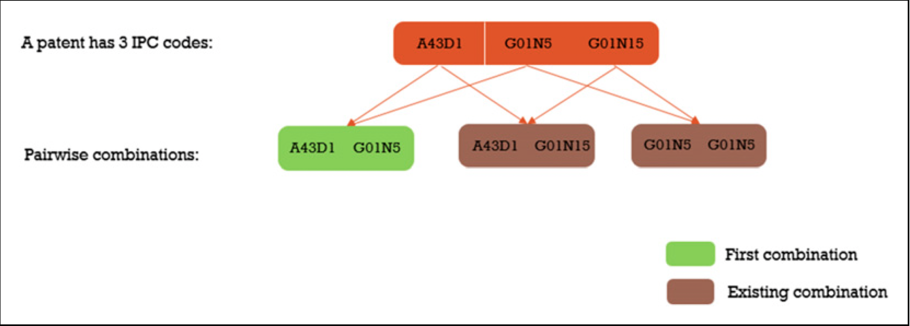

Anatomy of a Measure: Patent Novelty
McNamara’s Fallacy is Everywhere For Those With The Eyes to See
I have been nerdsniped, yet again.
I found this paper about the reduction in novel patents in China covering the years between 1990 and 2014 due to a classic Goodharting while scanning through twitter and initially agreed with the findings as it comports with my priors. The fact that innovation as a percentage of patents fell when Chinese leadership mandated greater levels of patent filing seems like a mechanical relationship and one that should be easy to accept. But recently I’ve decided to put into practice one of the tenets of rational thought and decided to find out if it is possible to find issues with this paper that may defeat the underlying argument entirely. That is, can I find a way to cast enough doubt on the key finding by attacking one of the metrics it is based on? Not necessarily based on philosophical grounds (although I will, later) but on the actual measure construction itself.
For the majority of you that wont click on the paper and its definition of novelty allow me to deliver it to you.
Novelty /ˈnä-vəl-tē / (noun): In the context of this paper, the quality of a patent being the first to introduce a unique combination of two technology domains as determined by their 6-digit IPC classification. A patent is considered novel if it is the earliest recorded instance where a specific pair of technology domains appears together.

Without regard to realistic classification pairing that means in order to get the maximum number of pairs possible for this novelty measure we can compute it using \({n \choose 2}\) since order doesn’t matter. The first instinct of anyone who has been reading this so far is probably to think of whether or not this maximum number has changed significantly during the time under study of the paper. By ingesting the IPC classification values found in pages like this that cover each of the years under study we can determine whether those maximums changed dramatically or not and what the year to year additions and subtractions were for the data.
The data showed something interesting coinciding with the Chinese Government mandate, the classification schema changed dramatically and was simplified. From the IPC version 7 which covered 2001-2005 to the IPC version that began in 2006.01 the number of categories shrank from 10420 to 8533 with 190 new categories and 2077 lost categories. The net effect is an 18 percent decrease in the number of categories and a 33% decrease in total possible pairs (if we don’t consider the 190 new categories added to keep things a bit simpler). So major changes occurred to the IPC classification system during this time may have mechanically reduced the novelty metric because what may have once been two or three categories that were used with some frequency instead consolidated to one category.
But even still the maximum number of pairs is \({8533 \choose 2}\) which is still 36.4 million possible pairs and the universe of data the authors collected only covered 4.5 million patents {although, classification pair distribution would augment this number} so maybe it wasn’t a change to the IPC classification, maybe something else was going on here.
Lets discuss classification count distribution, that is, the number of classification that a patent receives when the patent is granted. In the most trivial case we should understand that a patent with a singular classification is obviously not going to be able to create novel classification pairs.. because there is only one classification given. So what about when there are multiple classifications, and what happens if those change? Well in the case that there are three classifications that have heretofore been unseen then we can construct 3 new pairs but this means that 2 of those pairs are going to be wasted by this measure: a patent is either novel or it isn’t the number of novel pairings doesn’t matter. But what about in the case where we have patents with a higher average number of classifications? Well we should expect then that the likelihood of a patent being considered novel is greater as instead of 3 chances for a new pair we have \({5 \choose 2}\) chances for a new pair.
This matches the empirical data that I collected for patents filed in the US between 2006 and 2023. Between patent count and proportion of patents with multiple labels, the latter had a much stronger relationship with the novelty metric.
On top of that we can see a huge jump in novelty in 2013 whereas we see a mere continuation of a trend in the total number of patents filed. This coupled with the fact that multilabel patents increased at the same time as the increase in novelty should clarify that there is something besides just the number of patents being filed that influences the novelty metric. Additionally would we really be so confident that more innovation was occuring at such a higher rate than before? I’m not so sure. However this increase does line up with actions taken by the Obama administration to curb patent trolling and reform parts of the United States Patent and Trademark Office (USPTO), perhaps this is a part of the story.
If we take the empirical data and then further simulate changes to both we can see that the real effect comes with changes to the distribution of patent labels rather than total patent counts. In order to do this we can take the distributions of label counts for different years while keeping the possible labels in common and find the difference in the distribution of label counts on the novelty proportion. Additionally I find that when the number of patents increases year on year but the distribution of label counts is fixed then the novelty proportion doesn’t move much at all.
So perhaps flooding the field with new patents by provincial Chinese leaders wasn’t necessarily the issue but the number of labels the patents received was. This kind of cuts at the whole novelty thing though, if the number of labels can make big changes to the novelty proportion of patents then we should expect that changes to policy in the patent offices can change which patents are considered novel and which are not. In the US we can clearly see something happened in 2013 to make the novelty proportion jump, and it turns out there was a change in the direction of the USPTO in order to fight against patent trolls which brings us to our next issue: social measures are adversarial.
I can’t speak for the Chinese context so I’ll try to avoid getting out over my skis here, but in the US we have a delightful group of leeches we call Patent Trolls who file broad patents, get their “inventions” accepted by the USPTO, and then send their lawyers after other firms in order to extract rents. This, was clearly explained in Silicon Valley: Patent Troll. Changes to the classification standards, requirements for more specificity, and high rates of filing can all lead to changes in this novelty measure. But if that’s the case would these patents count as novel and innovative patents? And if our measure can be influenced by institutional shifts like this in the US, should we expect that the Chinese National Intellectual Property Administration to be immune to the same changes?
One particularly concerning issue with this patent novelty measure is the problem of classification granularity. As evidenced by the data showing the distribution of IPC classifications, some technology domains are much more finely subdivided than others. For example, the “Performing Operations; Transporting” section (B) has over 1,700 classifications in the earlier IPC v7 system, compared to just 247 in the “Textiles; Paper” section (D). This uneven granularity could make some fields appear artificially more “novel” simply because they have a larger number of possible classification combinations to draw from. Conversely, more mature fields with more detailed classification systems may be biased against, as the measure would be less likely to capture novel combinations in these areas. This fundamental flaw in the underlying classification scheme calls into question the validity of using such a pairwise novelty metric as a meaningful proxy for true technological innovation.
| Section | Classifications Count |
|---|---|
| A | 965 |
| B | 1,796 |
| C | 973 |
| D | 368 |
| E | 377 |
| F | 938 |
| G | 756 |
| H | 701 |
Another reason this measure doesn’t meaningfully capture innovation is because the measure seems to only care about “first” combinations, but doesn’t consider how meaningful or sustained those combinations become. A one-off weird combination that never gets used again counts the same as a groundbreaking pairing that spawns a whole new field. In order to get a better handle on innovation it might be better to weight combinations by how much they get adopted/cited in subsequent years or used in commercial products. This means the time coverage of the data would have to be much longer: it took a while for the methods of growing quartz crystals developed by Bell Labs to become economically significant, but they underlie much of our modern digital infrastructure. Generalize from here.
So the measure itself is sensitive to underlying changes in the classification standards, sensitive to changes in the number of classification labels assigned to patents, and can be gamed by patent trolls. The measure as taken naively has too much going on to capture what it purports to capture. But the more philosophical issue is that a new label pair existing on a patent isn’t necessarily an innovative patent! The novelty measure is supposed to point us toward capturing the creation of innovative patents but innovation isn’t necessarily determined by interdisciplinary work nor does this innovation necessarily mean that productivity will increase as a result of its existence.
When we depend on a flawed novelty measure—one that’s sensitive to classification shifts, prone to gaming, and disconnected from innovation—we risk validating our priors and believing things that may not hold up under scrutiny. It may very well be the case that China has slowed down in its innovation or increased waste patenting as a result of the national campaign to promote indigenous innovation, but with this novelty metric we cant really grasp whether that is true or not. Before we declare any outcome from an experiment it is important to consider the measurements, tools, and assumptions we’re employing. It would be foolish to measure a person’s height with a scale and all the more foolish to believe things because we agree with them.